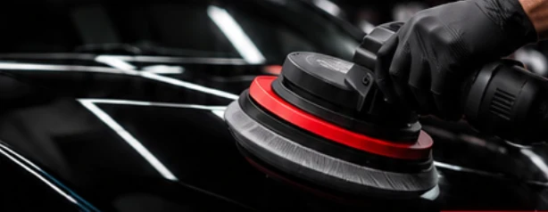

Detailing
automotor
Limpieza, descontaminación y protección profesional para mantener tu vehículo como nuevo.
- Guante blanco
- Lavado detallado
- Descontaminación de pintura
- Pulido y corrección de defectos
- Protección con cera o sellador
- Tratamientos cerámicos (coating)